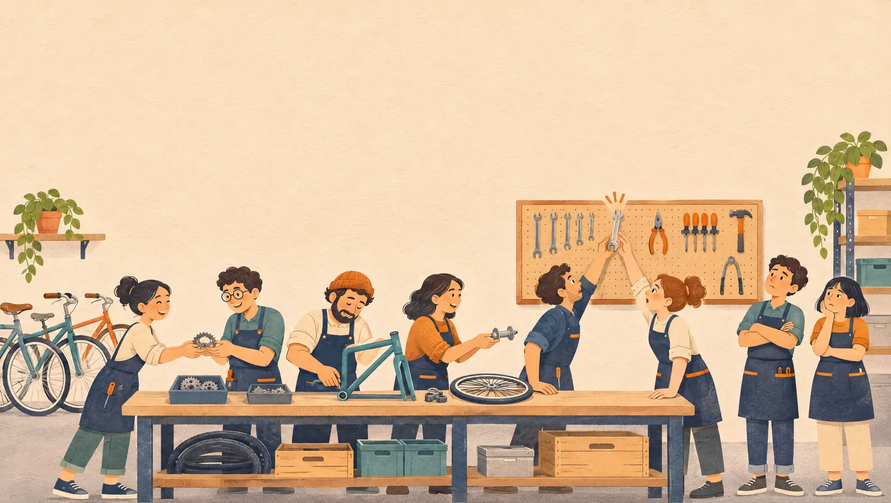

מה זו פונקציית ייצור?
כמה ארוחות יוצאות ממספר נתון של עובדים, ואיך מודדים כמה מוסיף כל עובד?
מסעדה אחת ושאלה אחת
הכללפונקציית ייצור אומרת כמה הכי הרבה אפשר לייצר מכמות נתונה של גורמי ייצור (עובדים, מכונות, חומרים), בטכנולוגיה הקיימת. כותבים אותה כך: q = f(K, L).
הכירו את מסעדה 1 מהסיכום. יש לה מטבח אחד, בגודל קבוע. בעלת המסעדה מחליטה רק דבר אחד: כמה עובדים יעבדו היום. והשאלה של כל השיעור: מה קורה כשמוסיפים עוד עובד?
- 1מטבח בגודל קבוע
- 0–6עובדים (L)
- 0–70ארוחות ביום (TP)
כך נראית פונקציית הייצור של המסעדה: כמה ארוחות היא מכינה ביום, לפי מספר העובדים.
| Lעובדים | 0 | 1 | 2 | 3 | 4 | 5 | 6 |
|---|---|---|---|---|---|---|---|
| TPארוחות | 0 | 15 | 29 | 42 | 54 | 63 | 70 |
נחזור למסעדה הזאת לאורך כל השיעור, וגם בשיעור 8, כשנחשב כמה עולה כל ארוחה.
פונקציית ייצור היא ביטוי מתמטי שמתאר את הקשר בין כמויות גורמי הייצור לבין כמות התפוקה המקסימלית שאפשר לייצר בעזרתם, בלי בזבוז, בהינתן רמת הטכנולוגיה הקיימת.
- ״מקסימלית״: הכי הרבה שאפשר. מסעדה שמבזבזת זמן או מצרכים מכינה פחות, וזה לא מה שהפונקציה מראה.
- ״בלי בזבוז״: רק שילובים יעילים. אם אפשר להכין אותן ארוחות עם פחות עובדים, השילוב הבזבזני לא נכנס לפונקציה.
- ״בהינתן הטכנולוגיה״: תנור מהיר יותר משנה את הפונקציה עצמה: מאותם עובדים יוצאות יותר ארוחות.
במטבח מכניסים מצרכים, כלים ומישהו שמבשל, ועושים לפי מתכון. פונקציית הייצור היא ״המתכון״ של העסק: כמה יוצא ממה שנכנס.
שימו לב: הפונקציה אומרת כמה אפשר לייצר, ולא כמה כדאי לייצר. את זה נלמד בשיעור 8.
את ההגדרה, עם שלוש מילות המפתח: ״מקסימלית״, ״בלי בזבוז״ ו״בהינתן הטכנולוגיה״. אפשר להוסיף q = f(K, L), כאשר K הוא ההון (מבנה, מכונות) ו־L היא העבודה.
תפוקה כוללת, ממוצעת ושולית
הכללTP היא כמה מייצרים בסך הכול. AP = TP ÷ L היא כמה מייצר עובד אחד בממוצע. MP = ΔTP ÷ ΔL היא כמה הוסיף העובד האחרון. בגרף, MP היא השיפוע בין שתי נקודות.
Δ (״דלתא״) פירושה שינוי: הערך אחרי, פחות הערך לפני. והמילה ״שולי״ בכלכלה תמיד אומרת: מה קורה כשמוסיפים עוד יחידה אחת.
במסעדה 1
| Lעובדים | TPארוחות | AP = TP ÷ Lממוצע לעובד | MP = ΔTP ÷ ΔLמה הוסיף האחרון |
|---|---|---|---|
| 0 | 0 | — | — |
| 1 | 15 | 1515 ÷ 1 | 1515 − 0 |
| 2 | 29 | 14.529 ÷ 2 | 1429 − 15 |
| 3 | 42 | 1442 ÷ 3 | 1342 − 29 |
| 4 | 54 | 13.554 ÷ 4 | 1254 − 42 |
| 5 | 63 | 12.663 ÷ 5 | 963 − 54 |
| 6 | 70 | ≈ 11.6770 ÷ 6 | 770 − 63 |
למשל, עם 3 עובדים: AP = 42 ÷ 3 = 14 ארוחות לעובד. העובד השלישי הוסיף MP = 42 − 29 = 13 ארוחות.
MP היא השיפוע בין שתי נקודות
בסיכום כתובה הנוסחה המלאה:
MP = (TP₁ − TP₀) ÷ (L₁ − L₀)
(L₀, TP₀) היא הנקודה שלפני, ו־(L₁, TP₁) היא הנקודה שאחרי. זה בדיוק השיפוע של הקו שמחבר ביניהן: בכמה עולים למעלה, חלקי בכמה זזים ימינה.
מהנקודה (0, 20) לנקודה (1, 45): MP = (45 − 20) ÷ (1 − 0) = 25. אלה הציונים בכלכלה בלי לימוד ואחרי שעת לימוד אחת. נפגוש אותם שוב בנושא 9.
ואם מוסיפים כמה עובדים בבת אחת? מחלקים. מ־2 עובדים ל־4: MP = (54 − 29) ÷ (4 − 2) = 12.5. כל אחד משני העובדים החדשים הוסיף, בממוצע, 12.5 ארוחות.
נסו: הזיזו את הסרגל. הקו המקווקו מהראשית מראה את AP, והקטע העבה מהנקודה הקודמת מראה את MP.
TP של מסעדה 1קו מהראשית: השיפוע הוא APהקטע האחרון: השיפוע הוא MP
הניסוי צריך JavaScript. הגרף מראה 3 עובדים: שיפוע הקו מהראשית הוא AP = 14, ושיפוע הקטע האחרון הוא MP = 13.
לעובד הראשון תמיד MP = AP, כי TP ÷ 1 = TP − 0. זה לא אומר כלום על שיא. במסעדה 1: MP = AP = 15.
בהמשך נראה את MP כשיפוע של עקומה שלמה (נושא 5), ואת AP ו־MP זו לצד זו (נושא 6).
AP = TP ÷ L ו־MP = ΔTP ÷ ΔL. בטבלה, MP היא ההפרש בין שתי שורות סמוכות. טעות נפוצה: לחלק את TP במספר העובדים גם בשביל MP. MP היא רק התוספת של העובד האחרון.
טווח קצר וטווח ארוך
מה אפשר לשנות מהר, מה תקוע, ומה קורה כשמוסיפים עוד ועוד עובדים למטבח שלא גדל?
גורם קבוע, גורם משתנה, טווח קצר וטווח ארוך
הכללגורם משתנה אפשר לשנות כבר בטווח הקצר (עובדים, חומרי גלם). גורם קבוע אי אפשר לשנות בטווח הקצר (מבנה, מכונות, טרקטורים). בטווח הארוך כל הגורמים משתנים, ואין גורם קבוע.
אפשר להגדיל או להקטין אותו מהר. בסיכום: עובדים וחומרי גלם. במסעדה: מספר העובדים.
אי אפשר לשנות אותו בטווח הקצר. בסיכום: מבנה, מכונות וטרקטורים. במסעדה: המטבח.
| בטווח הקצר | בטווח הארוך | |
|---|---|---|
| גורם משתנה | יש: עובדים, חומרי גלם | יש: כל הגורמים |
| גורם קבוע | יש: מבנה, מכונות | אין |
טווח קצר הוא תקופה שבה לפחות גורם ייצור אחד קבוע: מוסיפים עובדים, אבל המטבח נשאר אותו מטבח. טווח ארוך הוא תקופה ארוכה מספיק כדי לשנות הכול, גם את המבנה.

טווח קצר אינו מספר קבוע של חודשים. הוא תלוי בגורם שהכי קשה לשנות בעסק הזה: בחוזה השכירות של המבנה, או בזמן שלוקח לקנות מכונה חדשה.
נסו: זה המפעל מהתמונה. בחרו תקופה, ובדקו אם היא טווח קצר או ארוך.
בלי JavaScript: חודש, 3 שנים ו־15 שנה הם טווח קצר, כי המבנה עדיין קבוע. 25 שנה הם טווח ארוך.
טווח קצר: תקופה שבה לפחות גורם ייצור אחד קבוע. טווח ארוך: תקופה שבה כל גורמי הייצור משתנים. ההבחנה תלויה בפירמה, ולא בלוח השנה.
עוד ועוד עובדים באותו מטבח
הכללחוק התפוקה השולית הפוחתת: כשמוסיפים עוד ועוד מגורם משתנה אחד, והשאר קבועים, מנקודה מסוימת כל יחידה נוספת מוסיפה פחות מהקודמת.
ההסבר מהסיכום: נוסיף עובד שני, והתפוקה תעלה. נוסיף עוד, והיא עדיין תעלה. אבל כשיש כבר יותר מדי עובדים, אין מקום לכולם. הם מפריעים זה לזה, והתפוקה יורדת.

העובדים הראשונים מתחלקים בעבודה: אחד חותך, אחד מבשל. כל אחד עושה את מה שהוא הכי טוב בו.
המטבח לא גדל. לכל עובד חדש יש פחות מקום ופחות כלים. התפוקה עדיין עולה, אבל לאט יותר.
אין מקום לכולם. העובדים נתקעים זה בזה, ועובד נוסף מקטין את התפוקה הכוללת.
למה זה קורה? כי משהו נשאר קבוע: המטבח. כל העובדים זהים. העובד החמישי לא גרוע מהראשון. הוא מוסיף פחות כי הוא מגיע למטבח שכבר מלא. אילו הגיע ראשון, הוא היה מוסיף כמו הראשון.
ומה קורה במסעדה 1?
במסעדה 1 התוספות הן 15, 14, 13, 12, 9, 7. כבר מהעובד השני, כל עובד מוסיף פחות מהקודם. כלומר המסעדה הזאת נמצאת כבר באזור ב׳: אין בטבלה שלה קטע שבו MP עולה. וכל התוספות חיוביות, ולכן עד 6 עובדים היא עוד לא הגיעה לאזור ג׳.
במפעל האופנועים מהמצגת התוספות הן 4, 8, 12, 8, 3, −5: קודם עולות, אחר כך יורדות, ובסוף שליליות. למפעל האופנועים
ואם מגדילים גם את המטבח? זה כבר טווח ארוך, והחוק לא מדבר עליו. החוק עוסק רק במצב שבו גורם אחד גדל והשאר קבועים.
החוק לא אומר שהתפוקה הכוללת יורדת. הוא אומר שהתוספת יורדת. במסעדה 1 MP יורדת כל הזמן, ובכל זאת TP עולה כל הזמן: מ־15 ל־70.
עקומת התפוקה הכוללת
איך נראית TP בגרף, איפה היא מתחילה להתמתן, ואיפה השיא שלה?
עקומת TP: נקודת הפיתול ו־MAX TP
הכללTP עולה ונעשית תלולה יותר ויותר עד נקודת הפיתול L̂. שם MP בשיא. אחרי L̂ היא עדיין עולה, אבל מתמתנת. ב־L* היא מגיעה ל־MAX TP, ושם MP = 0. אחרי L* היא יורדת.
בסיכום יש גרף של TP בלי מספרים, רק הצורה. זו הצורה של פונקציית ייצור ״רגילה״, עם שלושת האזורים מנושא 4. MP היא השיפוע של העקומה, ולכן כל מה שקורה ל־MP רואים בשיפוע:
נסו: הזיזו את הסרגל לאורך העקומה. הקו הדק נוגע בעקומה, והשיפוע שלו הוא MP באותה נקודה.
הניסוי צריך JavaScript. בגרף: עד L̂ העקומה נעשית תלולה יותר, בין L̂ ל־L* היא מתמתנת, ואחרי L* היא יורדת.
- מ־0 עד L̂: העקומה נעשית תלולה יותר. כל עובד מוסיף יותר מהקודם: MP עולה.
- ב־L̂, נקודת הפיתול: כאן העקומה הכי תלולה, ו־MP בשיא. מכאן העקומה מפסיקה להתעקם כלפי מעלה ומתחילה להתעקם כלפי מטה.
- מ־L̂ עד L*: העקומה עדיין עולה, אבל פחות תלולה. MP יורדת, אבל חיובית.
- ב־L*: MAX TP. העקומה שטוחה בפסגה: MP = 0.
- אחרי L*: העקומה יורדת. MP שלילית: יותר מדי עובדים.
כל עוד הצעד הבא עולה (MP > 0), ממשיכים לטפס. בפסגה הצעד הבא שטוח (MP = 0). צעד נוסף כבר מוריד (MP < 0).
ומה עם מסעדה 1?
העקומה של מסעדה 1 מתחילה ״אחרי הפיתול״. היא עולה מההתחלה, וכל קטע פחות תלול מהקודם. כלומר היא נראית כמו החלק של הגרף הכללי שבין L̂ ל־L*.
אין לה נקודת פיתול בתוך הטבלה, כי אין בה קטע שבו MP עולה. וגם ל־MAX TP היא עוד לא הגיעה: גם העובד השישי מוסיף 7 ארוחות. בטבלה אין עובד שביעי, ולכן אנחנו לא יודעים איפה ה־L* שלה.
MAX TP מתקבלת כש־MP = 0 (ב־L*). נקודת הפיתול L̂ היא השיא של MP. בטבלה MP כמעט אף פעם לא יוצאת בדיוק 0. לכן מחפשים את העובד האחרון שה־MP שלו עוד לא שלילית.
AP ו־MP ביחד
איך שתי העקומות קשורות זו לזו, ואיפה כדאי לפירמה לעבוד?
שלוש העקומות, זו מתחת לזו
הכללMP מגיעה לשיא ב־L̂. היא חוצה את AP בדיוק בשיא של AP, ומגיעה ל־0 ב־L*. הסדר תמיד אותו סדר: קודם השיא של MP, אחר כך השיא של AP, ובסוף MAX TP.
בסיכום מצוירות AP ו־MP מתחת לגרף של TP, על אותו ציר L. כך רואים בבת אחת מה קורה לשלושתן.
נסו: הזיזו את הסרגל, או קפצו לאחת משלוש הנקודות החשובות. הקו האנכי עובר בשני הגרפים יחד.
TPMPAPהתחום הרלוונטי
הניסוי צריך JavaScript. בגרפים: MP בשיא מתחת לנקודת הפיתול L̂, חוצה את AP בשיא של AP, ומגיעה ל־0 ב־L*. הקטע הירוק הוא התחום הרלוונטי.
ארבעה דברים לראות בגרף
- MP עולה עד L̂ ואז יורדת. השיא שלה נמצא בדיוק מתחת לנקודת הפיתול של TP.
- בהתחלה AP ו־MP יוצאות מאותה נקודה (בטבלה: בעובד הראשון). זה תמיד כך, וזה לא שיא.
- MP חוצה את AP בשיא של AP, מלמעלה למטה.
- MP = 0 ב־L*, בדיוק מתחת ל־MAX TP.
ומה עם מסעדה 1?
MP (עיגולים)AP (ריבועים)
במסעדה 1 AP יורדת כל הזמן: 15, 14.5, 14, 13.5, 12.6, 11.67. השיא שלה כבר בעובד הראשון, ו־MP מתחת לה מהעובד השני והלאה. גם זה מראה שהמסעדה נמצאת בחלק של הגרף שאחרי שני השיאים.
MP חוצה את AP בנקודת המקסימום של AP. MP מגיעה לשיא לפני AP (ב־L̂). MAX TP מתקבלת כש־MP = 0 (ב־L*).
הכללים: MP מושכת את AP, ומזיזה את TP
הכללכש־MP > AP, AP עולה. כש־MP = AP, AP בשיא. כש־MP < AP, AP יורדת. ובנפרד: כש־MP > 0, TP עולה. כש־MP = 0, זו MAX TP. כש־MP < 0, TP יורדת.
MP מול AP
MP מול 0
למה זה עובד? ממוצע ציונים
AP היא כמו ממוצע הציונים שלכם, ו־MP היא הציון במבחן החדש. ציון מעל הממוצע מעלה אותו. ציון מתחת לממוצע מוריד אותו, גם אם הוא ציון טוב.
נסו: עשיתם 3 מבחנים, והממוצע שלכם 80. בחרו ציון למבחן הרביעי, וראו מה קורה לממוצע.
בלי JavaScript: ציון 95 מעלה את הממוצע מ־80 ל־83.75. ציון 70 מוריד אותו ל־77.5, אף שזה ציון עובר.
ולמה MP חוצה את AP דווקא בשיא? בשיא, AP לא עולה ולא יורדת. אילו העובד החדש היה מעל הממוצע, הממוצע עוד היה עולה. אילו היה מתחת, הממוצע כבר היה יורד. לכן בשיא הוא חייב להיות בדיוק ״ממוצע״: MP = AP.
בודקים את הכללים על מסעדה 1
| Lעובדים | MPהעובד החדש | APלפניו | APאחריו | TPאחריו |
|---|---|---|---|---|
| 2 | 14 | 15 | 14.5 ↓ | 29 ↑ |
| 3 | 13 | 14.5 | 14 ↓ | 42 ↑ |
| 4 | 12 | 14 | 13.5 ↓ | 54 ↑ |
| 5 | 9 | 13.5 | 12.6 ↓ | 63 ↑ |
| 6 | 7 | 12.6 | 11.67 ↓ | 70 ↑ |
בכל שורה MP קטנה מה־AP שלפני העובד, ולכן AP יורדת (↓). ובכל שורה MP חיובית, ולכן TP עולה (↑). שימו לב: AP יורדת למרות ש־MP חיובית.
״AP יורדת, ולכן MP שלילית״: לא נכון. מספיק ש־MP קטנה מ־AP. במסעדה 1 העובד החמישי מוסיף MP = 9, ו־AP יורדת מ־13.5 ל־12.6.
התחום הרלוונטי לייצור
הכללפירמה רציונלית מעסיקה עובדים מהשיא של AP ועד L*. זה התחום הרלוונטי לייצור, ובספרים קוראים לו ״שלב II״. איפה בדיוק בתוכו? זה תלוי בשכר ובמחיר, ונלמד את זה בשיעור 8.
MP > AP: כל עובד נוסף מעלה את התפוקה הממוצעת. כדאי להמשיך להוסיף.
AP יורדת, אבל MP עדיין חיובית: כל עובד עוד מוסיף ארוחות.
MP < 0: עובד נוסף מוריד את התפוקה, וגם צריך לשלם לו.
למה דווקא שם?
- למה לא אחרי L*? עובד שם מוריד את TP. משלמים לו שכר, והוא מקטין את מה שיש למכור. אין שום סיבה להעסיק אותו.
- למה לא לעצור לפני השיא של AP? שם כל עובד נוסף מייצר יותר מהממוצע, ולכן הוא מעלה את התפוקה לכל עובד. כל ארוחה יוצאת ״זולה״ יותר בעבודה. אם בכלל כדאי לייצר, כדאי להמשיך לפחות עד השיא של AP.
- איפה בדיוק בין השניים? תלוי בכמה עולה עובד ובכמה נמכרת ארוחה. זה הנושא של שיעור 8.
שימו לב: האזורים מנושא 4 נקבעים לפי MP (עולה, יורדת, שלילית), והשלבים כאן נקבעים לפי AP. אזור ב׳ מתחיל בשיא של MP, ושלב II מתחיל מאוחר יותר, בשיא של AP. אזור ג׳ ושלב III זהים: שם MP שלילית.
ומה עם מסעדה 1?
במסעדה 1 AP בשיא כבר בעובד הראשון, ו־MP חיובית עד העובד השישי. לכן כל הטבלה, מעובד 1 עד עובד 6, נמצאת בתחום הרלוונטי. כמה עובדים היא תעסיק בפועל? זה תלוי בעלויות: עלות קבועה של 20 ₪, 80 ₪ לכל עובד ו־2 ₪ חומרי גלם לכל ארוחה.
ממשיכים בשיעור 8 · עלויותבשיעור 8 נחשב כמה עולה כל ארוחה במסעדה הזאתהתחום הרלוונטי: מהשיא של AP (שם MP = AP) ועד MAX TP (שם MP = 0). אחרי L* MP < 0, ועובד נוסף מוריד את התפוקה. לפני השיא של AP כל עובד מעלה את התפוקה הממוצעת, ולכן כדאי להוסיף.
לאן לשלוח את העובד הבא?
יש כמות קבועה של שעות או של עובדים, וכמה מקומות שאפשר לשלוח אותם אליהם. איך מחלקים?
6 שעות לימוד, שלושה מבחנים
הכללכל שעה הולכת למקום שבו היא מוסיפה הכי הרבה: למבחן שבו MP של השעה הבאה הכי גבוהה. כך מקבלים את סכום הציונים הכי גבוה, ולכן גם את הממוצע הכי גבוה.
לסטודנט יש 6 שעות ללמוד לשלושה מבחנים: כלכלה, מחשבה ושיטות. כל שעה מעלה את הציון, אבל כל שעה נוספת באותו מקצוע מוסיפה פחות מהקודמת. זה שוב חוק התפוקה השולית הפוחתת: השעות הן הגורם המשתנה, והציון הוא התפוקה.
| שעות | ציון בכלכלה | MP כלכלה | ציון במחשבה | MP מחשבה | ציון בשיטות | MP שיטות |
|---|---|---|---|---|---|---|
| 0 | 20 | — | 40 | — | 80 | — |
| 1 | 45 | 25 | 52 | 12 | 90 | 10 |
| 2 | 65 | 20 | 63 | 11 | 95 | 5 |
| 3 | 75 | 10 | 71 | 8 | 97 | 2 |
| 4 | 83 | 8 | 78 | 7 | 98 | 1 |
| 5 | 90 | 7 | 83 | 5 | 99 | 1 |
| 6 | 92 | 2 | 86 | 3 | 99 | 0 |
MP = כמה נקודות הוסיפה השעה האחרונה באותו מקצוע. מודגשות השעות שנבחרות בסוף.
נסו: הוסיפו שעה למבחן בכפתור +. או לחצו ״השעה הבאה״, ונבחר בשבילכם לפי הכלל, עם הסבר.
הניסוי צריך JavaScript. החלוקה הטובה ביותר כתובה מתחת, שעה אחרי שעה.
שעה אחרי שעה
- שעה 1: בכלכלה היא תוסיף 25 נקודות, במחשבה 12 ובשיטות 10. לכן כלכלה.
- שעה 2: בכלכלה היא תוסיף 20 נקודות, במחשבה 12 ובשיטות 10. לכן כלכלה.
- שעה 3: בכלכלה היא תוסיף 10 נקודות, במחשבה 12 ובשיטות 10. לכן מחשבה.
- שעה 4: בכלכלה היא תוסיף 10 נקודות, במחשבה 11 ובשיטות 10. לכן מחשבה.
- שעה 5: בכלכלה היא תוסיף 10 נקודות, במחשבה 8 ובשיטות 10. תיקו בין כלכלה לשיטות. נבחר כלכלה, והשעה הבאה תלך לשיטות.
- שעה 6: בכלכלה היא תוסיף 8 נקודות, במחשבה 8 ובשיטות 10. לכן שיטות.
התוצאה: 3 שעות כלכלה (ציון 75), 2 שעות מחשבה (ציון 63) ושעה אחת שיטות (ציון 90). הסכום: 75 + 63 + 90 = 228, והממוצע: 228 ÷ 3 = 76.
בדקנו את כל 28 הדרכים לחלק 6 שעות בין שלושה מבחנים. לאף אחת מהן אין ממוצע גבוה מ־76. ולמה מספיק לחשוב על הסכום? כי תמיד מחלקים ב־3, ולכן הסכום הגבוה ביותר נותן גם את הממוצע הגבוה ביותר.
לא שולחים את השעה למקצוע עם הציון הנמוך ביותר, וגם לא למקצוע עם הציון הגבוה ביותר. משווים רק את מה שהשעה הבאה תוסיף. שיטות מתחילה מ־80, ובכל זאת השעה השנייה בה מוסיפה רק 5.
ואם יש רק 5 שעות?
מוותרים על השעה שמוסיפה הכי מעט מבין השעות שנבחרו: אחת משתי השעות שמוסיפות 10. יש שתי דרכים, ושתיהן נותנות אותו סכום:
- 2 שעות כלכלה, 2 שעות מחשבה ושעה אחת שיטות (כמו בסיכום): 65 + 63 + 90 = 218.
- 3 שעות כלכלה, 2 שעות מחשבה, ובלי שיטות: 75 + 63 + 80 = 218.
בשתיהן הממוצע הוא 218 ÷ 3 ≈ 72.67. השעה שירדה הוסיפה 10 נקודות לסכום, ולכן הממוצע ירד ב־10 ÷ 3 ≈ 3.33.
מחשבים MP לכל מקצוע (ההפרש בין שורות סמוכות). בכל צעד נותנים את השעה הבאה למקצוע שבו MP הבאה הכי גבוהה. בתיקו אפשר לבחור כל אחד מהם. בסוף מחברים את הציונים ומחלקים במספר המבחנים.
שתי מסעדות, 5 עובדים
הכללאותו כלל בדיוק: כל עובד הולך למסעדה שבה MP של העובד הבא גבוהה יותר. עם 5 עובדים: 3 למסעדה 1 ו־2 למסעדה 2, ו־TP = 42 + 39 = 81.
לבעלת מסעדה 1 יש גם מסעדה שנייה, ו־5 עובדים בסך הכול. כמה עובדים לשלוח לכל מסעדה, כדי שיוכנו כמה שיותר ארוחות?
| Lעובדים | TPמסעדה 1 | MPמסעדה 1 | TPמסעדה 2 | MPמסעדה 2 |
|---|---|---|---|---|
| 0 | 0 | — | 0 | — |
| 1 | 15 | 15 | 20 | 20 |
| 2 | 29 | 14 | 39 | 19 |
| 3 | 42 | 13 | 51 | 12 |
| 4 | 54 | 12 | 61 | 10 |
| 5 | 63 | 9 | 70 | 9 |
| 6 | 70 | 7 |
נסו: שלחו עובדים בכפתורי + ו־−, או לחצו ״העובד הבא״ ונשבץ בשבילכם לפי הכלל.
הניסוי צריך JavaScript. החלוקה הנכונה כתובה מתחת, עובד אחרי עובד.
עובד אחרי עובד
- עובד 1: במסעדה 1 הוא מוסיף 15, במסעדה 2 הוא מוסיף 20. לכן מסעדה 2.
- עובד 2: במסעדה 1 הוא מוסיף 15, במסעדה 2 הוא מוסיף 19. לכן מסעדה 2.
- עובד 3: במסעדה 1 הוא מוסיף 15, במסעדה 2 הוא מוסיף 12. לכן מסעדה 1.
- עובד 4: במסעדה 1 הוא מוסיף 14, במסעדה 2 הוא מוסיף 12. לכן מסעדה 1.
- עובד 5: במסעדה 1 הוא מוסיף 13, במסעדה 2 הוא מוסיף 12. לכן מסעדה 1.
- עובדים 6 ו־7: בשתי המסעדות העובד הבא מוסיף 12. תיקו, ולכן אחד לכל מסעדה.
התוצאה: במסעדה 1 שלושה עובדים ובמסעדה 2 שניים. TP₅ = 42 + 39 = 81. אפשר גם לחבר את התוספות של חמשת העובדים:
20 + 19 + 15 + 14 + 13 = 81
בדיקה: כל חלוקה אחרת של 5 העובדים נותנת פחות. למשל 4 ו־1 נותנים 54 + 20 = 74, ו־2 ו־3 נותנים 29 + 51 = 80.
מה התפוקה השולית של העובד החמישי?
מסתכלים על העובד האחרון ששובץ: השלישי במסעדה 1. הוא הוסיף 13 ארוחות, ולכן MP₅ = 13.
בשאלה ״מה ה־MP של העובד החמישי״ לא מחלקים 81 ÷ 5. זו התפוקה הממוצעת AP, ולא התוספת של העובד האחרון.
הכלל עובד כי בכל מסעדה MP רק יורדת. אין ״הפתעה טובה״ שמחכה מאחורי עובד חלש. גם בשני השדות מהמצגת זה אותו כלל.
מחשבים MP בכל מסעדה. משבצים עובד אחרי עובד למקום שבו MP הבאה גבוהה יותר. בסוף: TP = סכום התפוקות בשני המקומות, וה־MP של העובד האחרון = התוספת של העובד האחרון ששובץ.
סוגרים את מסעדה 2: כמה מפסידים?
הכללההפסד מסגירה = מה שהמסעדה ייצרה, פחות מה שהעובדים שלה יוסיפו במקום אחר. כאן: −39 + 12 + 9 = −18. מפסידים 18 ארוחות, ולא 39.
מסעדה 2 מכינה 39 ארוחות עם 2 עובדים. אם סוגרים אותה, האם מפסידים 39 ארוחות? לא. שני העובדים שלה לא נעלמים: הם עוברים למסעדה 1, ושם הם העובד הרביעי והחמישי.
- מאבדים את מה שמסעדה 2 הכינה: −39.
- העובד הרביעי במסעדה 1 מוסיף +12.
- העובד החמישי במסעדה 1 מוסיף +9.
סך הכול −39 + 12 + 9 = −18. התפוקה יורדת מ־81 ל־63 ארוחות. בדיקה: 5 עובדים במסעדה 1 מכינים בדיוק 63 ארוחות.
מישהי עוזבת עבודה שמכניסה 8,000 ₪ ועוברת לעבודה שמכניסה 6,000 ₪. היא לא מפסידה 8,000 ₪, אלא 2,000 ₪. זה ההיגיון של עלות אלטרנטיבית, שנפגוש בשיעור 8.
ואם סוגרים דווקא את מסעדה 1? נסו לבד בשאלה 23 במבחן. התשובה מפתיעה.
השינוי בתפוקה = מינוס התפוקה של המקום שנסגר, ועוד סכום ה־MP של העובדים שעוברים, במקום החדש. את ה־MP לוקחים מהשורות הבאות בטבלה של המקום החדש: אצלנו העובד הרביעי והחמישי במסעדה 1.
הדוגמאות מהמצגת
המבחן יכול להשתמש גם בדוגמאות של המרצה. הנה הן בקצרה, עם אותם כללים.
מפעל האופנועים, שני השדות ועוד
הכללאותם כללים, עם המספרים של המרצה. במפעל האופנועים רואים בטבלה את שלושת האזורים, כולל קטע שבו MP עולה. בשני השדות רואים שוב את כלל ההקצאה: כל עובד הולך לאן שהוא מוסיף הכי הרבה.

במפעל יש מכונות קבועות, ולכן זה טווח קצר. משנים רק את מספר העובדים:
| Lעובדים | qאופנועים | AP = q ÷ Lממוצע | MP = Δq ÷ ΔLתוספת |
|---|---|---|---|
| 0 | 0 | — | — |
| 1 | 4 | 44 ÷ 1 | 44 − 0 |
| 2 | 12 | 612 ÷ 2 | 812 − 4 |
| 3 | 24 | 824 ÷ 3 | 1224 − 12 |
| 4 | 32 | 832 ÷ 4 | 832 − 24 |
| 5 | 35 | 735 ÷ 5 | 335 − 32 |
| 6 | 30 | 530 ÷ 6 | −530 − 35 |
הפס בצד הטבלה: ירוק = MP עולה (עובדים 1 עד 3), צהוב = פוחתת וחיובית (4 ו־5), אדום = שלילית (6).
נסו: לחצו ״עוד עובד״ ועקבו אחרי שני הגרפים.
TP: כמה אופנועים יוצאים
MP ו־AP: אופנועים לעובד
MP (עיגולים)AP (ריבועים)
הניסוי צריך JavaScript. הגרפים מראים את כל 6 העובדים. הקווים המקווקווים: 1 = שיא MP (3 עובדים), 2 = שיא AP (4 עובדים), 3 = MAX TP (5 עובדים).
- קו 1 (L = 3): MP בשיא. העובד השלישי מוסיף הכי הרבה (12). הקטע מ־2 ל־3 עובדים הוא הכי תלול: זו נקודת הפיתול.
- קו 2 (L = 4): AP בשיא (8). כאן MP = AP = 8. בטבלה AP = 8 גם ב־3 עובדים: השיא הוא ״מישור״ קטן בין 3 ל־4.
- קו 3 (L = 5): MAX TP (35). העובד החמישי הוא האחרון שה־MP שלו לא שלילית. לשישי MP = −5.
התחום הרלוונטי כאן: מהשיא של AP (4 עובדים) עד L* = 5. פירמה רציונלית לא תעסיק עובד שישי: הוא מוריד את התפוקה מ־35 ל־30, וגם צריך לשלם לו.

| Lעובדים | qתפוקה | MPתוספת |
|---|---|---|
| 1 | 13 | 13 |
| 2 | 25 | 12 |
| 3 | 35 | 10 |
| 4 | 43 | 8 |
| Lעובדים | qתפוקה | MPתוספת |
|---|---|---|
| 1 | 11 | 11 |
| 2 | 20 | 9 |
| 3 | 27 | 7 |
| 4 | 31 | 4 |
נסו: חלקו 4 עובדים בכפתורי + ו־−, או לחצו ״העובד הבא״.
הניסוי צריך JavaScript. הפתרון כתוב מתחת.
- עובד 1: בשדה א׳ הוא מוסיף 13, בשדה ב׳ 11. לכן שדה א׳.
- עובד 2: עובד שני בשדה א׳ מוסיף 12, וראשון בשדה ב׳ מוסיף 11. לכן שדה א׳.
- עובד 3: שלישי בשדה א׳ מוסיף 10, וראשון בשדה ב׳ מוסיף 11. לכן שדה ב׳.
- עובד 4: שלישי בשדה א׳ מוסיף 10, ושני בשדה ב׳ מוסיף 9. לכן שדה א׳.
q = 35 + 11 = 46
למה לא כולם לשדה הטוב? 4 עובדים בשדה א׳ נותנים רק 43. העובד הרביעי שם מוסיף 8, ובשדה ב׳ עובד ראשון מוסיף 11. מבחן ההחלפה: מעבירים את העובד משדה ב׳ לשדה א׳? מאבדים 11 ומרוויחים 8. מעבירים את השלישי משדה א׳ לשדה ב׳? מאבדים 10 ומרוויחים 9. אף החלפה לא משפרת, ולכן 46 הוא המקסימום.
מתי הבחירה עובד אחרי עובד נכשלת? כשבמקום מסוים MP עולה בהתחלה. אז עובד ראשון ״חלש״ מסתיר עובד שני חזק. בכל הדוגמאות של השיעור MP רק יורדת, ולכן הכלל עובד.
מאפייה: q = 2L
בכל שעת עבודה מכינים 2 עוגות. לכן AP = 2L ÷ L = 2, וגם MP = 2, בכל נקודה. הגרף הוא קו ישר. אין כאן גורם קבוע, ולכן אין סיבה שהתוספת תרד: אין תפוקה שולית פוחתת, ול־AP אין שיא.
מפעל עם 10 עובדים
בשקפים יש עוד מפעל, עם עד 10 עובדים. לא צריך לזכור את המספרים, רק את הצורה: MP עולה עד העובד השישי. בעובדים 7 ו־8 היא כבר יורדת, אבל עדיין מעל AP, ולכן AP עדיין עולה ומגיעה לשיא. בעובדים 9 ו־10 MP מתחת ל־AP, ו־AP יורדת. כש־MP מתחילה לרדת, AP יכולה עוד לעלות.
פונקציית הייצור של המשק
Y = A · F(L, K, N)
L עבודה, K הון (מכונות, מבנים, כלים. לא כסף בבנק), N משאבי טבע (קרקע, מים). A היא רמת הטכנולוגיה, והיא כופלת את הכול: כש־A עולה, אותם עובדים ומכונות מייצרים יותר, וגם AP וגם MP גדלות. כל העקומה זזה למעלה. אות גדולה (Y, F) = המשק כולו. אות קטנה (q, f) = פירמה אחת.
MPL ו־MPK
כשהתפוקה תלויה גם בעובדים וגם במכונות, יש שתי תפוקות שוליות: MPL (עוד עובד) ו־MPK (עוד מכונה). כשמודדים את MPL, המכונות נשארות קבועות. אחרת אי אפשר לדעת מי הוסיף את התפוקה. בלטינית קוראים להנחה ״כל השאר קבוע״ ceteris paribus. כשנתונה נוסחה, MPL היא הנגזרת לפי L, ו־K נשאר כמו מספר.
תרגול ומבחן
בודקים שהבנתם, וחוזרים לפני המבחן.
11 מלכודות שהמבחן אוהב
בדקו את עצמכם: לכל טענה, נסו להגיד מה לא נכון בה, ורק אז פתחו.
״MP יורדת, ולכן TP יורדת״.
לא. TP יורדת רק כש־MP שלילית. במסעדה 1 MP יורדת כל הזמן, ו־TP עולה כל הזמן.
״AP יורדת, ולכן MP שלילית״.
לא. מספיק ש־MP < AP. במסעדה 1, MP = 9 ו־AP יורדת.
״MP יורדת, ולכן גם AP יורדת״.
לא. כל עוד MP > AP, AP עולה, גם אם MP כבר יורדת. זה הקטע שבין L̂ לשיא של AP.
״MP חוצה את AP בשיא של MP״.
לא. בשיא של AP. השיא של MP בא קודם, מעל נקודת הפיתול L̂. (זו גם הטעות בגרף שבסיכום.)
״השיא של AP הוא הנקודה הטובה ביותר״.
לא בדיוק. הוא תחילת התחום הרלוונטי. הפירמה יכולה לעבוד בכל מקום עד L*.
״גורם קבוע יש בטווח הארוך״.
הפוך. גורם קבוע יש רק בטווח הקצר. בטווח הארוך כל הגורמים משתנים.
״לעובד הראשון MP = AP, ולכן AP בשיא״.
לא. לעובד הראשון תמיד MP = AP, כי TP ÷ 1 = TP − 0. זה לא אומר כלום על שיא.
״MAX TP כש־AP מקסימלית״.
לא. MAX TP כש־MP = 0, ב־L*. השיא של AP בא לפני.
״את השעה הבאה נותנים למקצוע עם הציון הנמוך ביותר״.
לא. משווים רק את מה שהשעה הבאה תוסיף (MP), ולא את הציון (TP) ולא את הממוצע (AP).
״סוגרים מסעדה, ולכן מפסידים את כל מה שהיא ייצרה״.
לא. העובדים עוברים למקום אחר ומוסיפים שם. ההפסד: −39 + 12 + 9 = −18, ולא −39.
״ה־MP של העובד החמישי היא TP ÷ 5״.
לא. TP ÷ 5 היא AP. MP היא רק התוספת של העובד החמישי: TP₅ − TP₄.
25 שאלות מבחן, עם פתרון מלא
16 שאלות אמריקאיות ו־9 שאלות חישוב והקצאה, כמו בסיכום. בשאלות האמריקאיות לחצו על תשובה: תקבלו משוב והסבר. בשאלות החישוב נסו לבד, ורק אז פתחו את הפתרון.
בחרו תשובה כדי לקבל משוב.
א. שאלות אמריקאיות
שאלה 1. במסעדה 1, 4 עובדים מכינים 54 ארוחות, ו־5 עובדים מכינים 63. מה התפוקה השולית של העובד החמישי?
ההסבר המלא
התשובה הנכונה: ב׳.
שלב 1: MP = ΔTP ÷ ΔL.
שלב 2: (63 − 54) ÷ (5 − 4) = 9.
למה לא האחרות? 12.6 היא AP של 5 עובדים (63 ÷ 5), ו־13.5 היא AP של 4 עובדים. 63 היא TP.
שאלה 2. במסעדה 2, 3 עובדים מכינים 51 ארוחות. מה התפוקה הממוצעת?
ההסבר המלא
התשובה הנכונה: ד׳.
AP = TP ÷ L = 51 ÷ 3 = 17. 12 היא MP של העובד השלישי (51 − 39). 153 יוצא אם כופלים במקום לחלק.
שאלה 3. מה נכון לגבי גורם ייצור קבוע?
ההסבר המלא
התשובה הנכונה: א׳.
גורם קבוע הוא גורם שאי אפשר לשנות בטווח הקצר. בטווח הארוך אפשר לשנות הכול, ולכן אין בו גורמים קבועים. העובדים הם בדרך כלל הגורם המשתנה. בסיכום הניסוח הזה הפוך: תיקון 4.
שאלה 4. מה אומר חוק התפוקה השולית הפוחתת?
ההסבר המלא
התשובה הנכונה: ג׳.
החוק עוסק בתוספת (MP), ולא בתפוקה הכוללת. הסיבה היא הגורם הקבוע, ולא העובדים: כל העובדים זהים. וכשמגדילים הכול יחד, זה טווח ארוך, והחוק לא מדבר עליו.
שאלה 5. מה קורה בנקודת הפיתול L̂ של עקומת TP?
ההסבר המלא
התשובה הנכונה: ג׳.
בנקודת הפיתול העקומה הכי תלולה, ו־MP היא השיפוע שלה. לכן MP בשיא. השיא של AP בא אחר כך, ו־MAX TP (שם MP = 0) בסוף, ב־L*.
שאלה 6. בנקודה מסוימת MP = 0. מה נכון לגבי TP בנקודה הזאת?
ההסבר המלא
התשובה הנכונה: א׳.
MP היא השיפוע של TP. שיפוע 0 = פסגה: לפני כן MP > 0 ו־TP עולה, אחרי כן MP < 0 ו־TP יורדת. זו MAX TP, ב־L*.
שאלה 7. עובד חדש מוסיף MP = 9. התפוקה הממוצעת לפניו הייתה AP = 13.5. מה קורה?
ההסבר המלא
התשובה הנכונה: ד׳.
שלב 1: MP < AP (9 קטן מ־13.5), ולכן AP יורדת.
שלב 2: MP > 0, ולכן TP עולה.
אלה המספרים של העובד החמישי במסעדה 1: AP יורדת ל־12.6, ו־TP עולה ל־63.
שאלה 8. איפה עקומת MP חוצה את עקומת AP?
ההסבר המלא
התשובה הנכונה: ב׳.
כל עוד MP > AP, AP עולה. כש־MP < AP, היא יורדת. לכן הן נפגשות בדיוק כש־AP מפסיקה לעלות: בשיא שלה. השיא של MP (ב־L̂) בא קודם.
שאלה 9. מהו התחום הרלוונטי לייצור?
ההסבר המלא
התשובה הנכונה: א׳.
לפני השיא של AP כדאי להמשיך להוסיף עובדים: כל עובד מעלה את התפוקה הממוצעת. אחרי L* כל עובד מוריד את TP. לכן התחום הוא מהשיא של AP ועד L*.
שאלה 10. למה פירמה רציונלית לא תעסיק עובדים אחרי L*?
ההסבר המלא
התשובה הנכונה: ג׳.
אחרי L* עובד נוסף מוריד את התפוקה וגם עולה שכר. AP שם עדיין חיובית (יש תפוקה, היא רק קטנה), ו־TP לא 0. MP ב־L* שווה 0, ולא בשיא.
שאלה 11. לסטודנטית נשארה שעת לימוד אחת. השעה תוסיף לה 8 נקודות בכלכלה, 7 במחשבה ו־10 בשיטות. הציון שלה בשיטות כבר הגבוה מכולם. לאן כדאי לה ללכת?
ההסבר המלא
התשובה הנכונה: ד׳.
משווים רק את MP של השעה הבאה: 8, 7 ו־10. הגבוהה היא 10, בשיטות. זה שהציון שם כבר גבוה לא משנה: המטרה היא הסכום (והממוצע) הכי גבוה.
שאלה 12. בשתי המסעדות יש 5 עובדים: 3 במסעדה 1 ו־2 במסעדה 2, ו־TP = 81. מה התפוקה השולית של העובד החמישי?
ההסבר המלא
התשובה הנכונה: ב׳.
העובד האחרון ששובץ הוא השלישי במסעדה 1: 42 − 29 = 13. 16.2 היא 81 ÷ 5, כלומר AP. 12 היא התוספת של העובד הבא, השישי. 81 היא TP.
שאלה 13. סוגרים את מסעדה 2, שהכינה 39 ארוחות, ומעבירים את שני העובדים שלה למסעדה 1 (שבה כבר 3 עובדים). בכמה ארוחות יורדת התפוקה?
ההסבר המלא
התשובה הנכונה: ב׳.
שלב 1: מאבדים את מה שמסעדה 2 הכינה: −39.
שלב 2: העובדים הם הרביעי והחמישי במסעדה 1: +12 + 9.
שלב 3: −39 + 12 + 9 = −18. (21 הוא רק מה שהם מוסיפים במסעדה 1.)
שאלה 14. איזה כלל קובע איך לחלק עובדים בין שתי מסעדות?
ההסבר המלא
התשובה הנכונה: א׳.
מה שמעניין הוא כמה העובד הזה יוסיף, כלומר MP של העובד הבא. AP ו־TP מתארים את העובדים שכבר שם.
שאלה 15. מוסיפים עוד ועוד עובדים. באיזה סדר מגיעים השיאים?
ההסבר המלא
התשובה הנכונה: ד׳.
MP בשיא בנקודת הפיתול L̂. היא ממשיכה להיות מעל AP עוד קצת, ולכן AP מגיעה לשיא אחריה. TP בשיא רק כש־MP = 0, ב־L*.
שאלה 16. במסעדה 1 MP = 15, 14, 13, 12, 9, 7. מה אפשר להגיד עליה, לפי הטבלה?
ההסבר המלא
התשובה הנכונה: ג׳.
MP יורדת כבר מהעובד השני, ולכן אין קטע שבו היא עולה, ואין נקודת פיתול בטבלה. MP עדיין חיובית, ולכן עוד לא הגענו ל־L*. ו־AP יורדת מההתחלה, כי MP < AP.
ב. שאלות חישוב והקצאה
שאלה 17 · מסעדה 2: חשבו AP ו־MP. האם AP שלה עולה בשלב כלשהו? · לחצו לפתרון
שלב 1: MP = ההפרש בין שורות סמוכות. AP = TP חלקי מספר העובדים.
| L | TP | MP | AP |
|---|---|---|---|
| 0 | 0 | — | — |
| 1 | 20 | 20 | 20 |
| 2 | 39 | 19 | 19.5 |
| 3 | 51 | 12 | 17 |
| 4 | 61 | 10 | 15.25 |
| 5 | 70 | 9 | 14 |
שלב 2: מהעובד השני והלאה MP < AP שלפניו (למשל 19 < 20, 12 < 19.5). לכן AP רק יורדת.
שלב 3: MP חיובית בכל השורות, ולכן TP עולה עד 5 עובדים. כמו מסעדה 1, כל הטבלה בתחום הרלוונטי.
שאלה 18 · הפוך: נתון L = 1, 2, 3, 4 ו־AP = 10, 12, 11, 9. מצאו TP ו־MP · לחצו לפתרון
שלב 1: אם AP = TP ÷ L, אז TP = AP × L.
| L | APנתון | TP = AP × L | MP |
|---|---|---|---|
| 1 | 10 | 10 × 1 = 10 | 10 |
| 2 | 12 | 12 × 2 = 24 | 14 |
| 3 | 11 | 11 × 3 = 33 | 9 |
| 4 | 9 | 9 × 4 = 36 | 3 |
שלב 2: MP = ההפרש בין שורות TP סמוכות.
שלב 3, בדיקה עם הכללים: בעובד 2, MP = 14 גדולה מה־AP הקודמת (10), ולכן AP עלתה. בעובד 3, MP = 9 קטנה מ־12, ולכן AP ירדה. ✓
שאלה 19 · נתונות התפוקות השוליות 6, 10, 8, 5, 0, −3. מצאו TP ו־AP, את השיא של AP, את MAX TP ואת התחום הרלוונטי · לחצו לפתרון
שלב 1: TP היא סכום כל ה־MP עד אותו עובד. AP = TP ÷ L.
| L | MPנתון | TPסכום ה־MP | AP = TP ÷ L |
|---|---|---|---|
| 1 | 6 | 6 | 6 |
| 2 | 10 | 16 | 8 |
| 3 | 8 | 24 | 8 |
| 4 | 5 | 29 | 7.25 |
| 5 | 0 | 29 | 5.8 |
| 6 | −3 | 26 | ≈ 4.33 |
שלב 2: השיא של AP הוא 8, ב־2 וב־3 עובדים: העובד השלישי מוסיף 8, בדיוק כמו ה־AP הקודמת. MAX TP = 29, ב־4 וב־5 עובדים: לעובד החמישי MP = 0.
שלב 3: התחום הרלוונטי: משיא AP (3 עובדים) עד L*. פירמה רציונלית לא תעסיק עובד חמישי (מוסיף 0 ועולה כסף), ובוודאי לא שישי (MP = −3).
שאלה 20 · TP = 6L² − L³. מצאו את L̂, את השיא של AP ואת L* · לחצו לפתרון
שלב 1: MP היא הנגזרת: MP = 12L − 3L². AP = TP ÷ L = 6L − L².
שלב 2: שיא MP: 12 − 6L = 0, כלומר L̂ = 2. שיא AP: 6 − 2L = 0, כלומר L = 3. בדיקה: MP(3) = 36 − 27 = 9 = AP(3) ✓.
שלב 3: MP = 0: 3L(4 − L) = 0, כלומר L* = 4 ו־MAX TP = 96 − 64 = 32. התחום הרלוונטי: מ־3 עד 4. הסדר: MP (2), AP (3), TP (4).
זו בדיוק הצורה של העקומה בניסויים 2 ו־3. מלכודת: TP(3) − TP(2) = 27 − 16 = 11, אבל הנגזרת ב־3 היא 9. כשנתונה נוסחה, גוזרים.
שאלה 21 · ל־4 שעות לימוד ושני מבחנים, סטטיסטיקה ואנגלית: איך לחלק, ומה הממוצע? · לחצו לפתרון
הנתונים. הציון בכל מבחן לפי מספר שעות הלימוד:
| שעות | סטטיסטיקה | MP | אנגלית | MP |
|---|---|---|---|---|
| 0 | 30 | — | 60 | — |
| 1 | 50 | 20 | 72 | 12 |
| 2 | 65 | 15 | 81 | 9 |
| 3 | 75 | 10 | 87 | 6 |
| 4 | 80 | 5 | 90 | 3 |
שלב 1: MP בסטטיסטיקה: 20, 15, 10, 5. באנגלית: 12, 9, 6, 3.
שלב 2: שעה 1: 20 מול 12, סטטיסטיקה. שעה 2: 15 מול 12, סטטיסטיקה. שעה 3: 10 מול 12, אנגלית. שעה 4: 10 מול 9, סטטיסטיקה.
שלב 3: 3 שעות סטטיסטיקה ושעה אחת אנגלית: 75 + 72 = 147, ממוצע 147 ÷ 2 = 73.5. בדיקה: 2 ו־2 נותנות 65 + 81 = 146, ו־4 ו־0 נותנות 80 + 60 = 140. שתיהן פחות.
שאלה 22 · רשת פיצריות עם שני סניפים ו־6 עובדים: איך לחלק? מה ה־MP של העובד השישי? ומה קורה אם סוגרים את סניף ב׳? · לחצו לפתרון
הנתונים. פיצות ביום, לפי מספר העובדים בכל סניף:
| עובדים | סניף א׳ | MP | סניף ב׳ | MP |
|---|---|---|---|---|
| 0 | 0 | — | 0 | — |
| 1 | 25 | 25 | 22 | 22 |
| 2 | 45 | 20 | 40 | 18 |
| 3 | 60 | 15 | 54 | 14 |
| 4 | 70 | 10 | 64 | 10 |
| 5 | 75 | 5 | 70 | 6 |
| 6 | 77 | 2 |
שלב 1: מסדרים את כל ה־MP מהגבוהה לנמוכה: 25 (א׳), 22 (ב׳), 20 (א׳), 18 (ב׳), 15 (א׳), 14 (ב׳). שישה עובדים: 3 בכל סניף, 60 + 54 = 114 פיצות.
שלב 2: העובד השישי (השלישי בסניף ב׳) הוסיף 14, ולכן MP₆ = 14.
שלב 3: סוגרים את סניף ב׳, ו־3 העובדים שלו הופכים לעובדים 4, 5 ו־6 בסניף א׳: −54 + 10 + 5 + 2 = −37. מפסידים 37 פיצות, ולא 54. בדיקה: 6 עובדים בסניף א׳ מכינים 77.
שאלה 23 · ואם סוגרים דווקא את מסעדה 1, ו־3 העובדים שלה עוברים למסעדה 2? · לחצו לפתרון
שלב 1: מאבדים את מה שמסעדה 1 הכינה עם 3 עובדים: −42.
שלב 2: במסעדה 2 כבר 2 עובדים, ולכן העוברים הם העובד השלישי, הרביעי והחמישי שם: +12 + 10 + 9 = 31.
שלב 3: −42 + 31 = −11. התפוקה יורדת מ־81 ל־70. מפסידים רק 11 ארוחות, פחות מה־18 של סגירת מסעדה 2. כאן עדיף לסגור דווקא את המסעדה שמכינה יותר. מה שקובע הוא לא כמה המסעדה מכינה, אלא כמה העובדים שלה יוסיפו במקום החדש.
שאלה 24 · מפעל מגייס עובדים תוך שבוע, קונה מכונות תוך שנה, ומחליף מבנה רק תוך 10 שנים. תקופה של 3 שנים היא טווח קצר או ארוך? ומה קבוע בתקופה של חודש? · לחצו לפתרון
שלב 1: טווח קצר = יש לפחות גורם אחד קבוע.
שלב 2: ב־3 שנים אפשר לשנות עובדים ומכונות, אבל לא את המבנה. לכן זה טווח קצר. הטווח הארוך כאן: 10 שנים ומעלה.
שלב 3: בחודש העובדים הם גורם משתנה, והמכונות והמבנה הם גורמים קבועים.
שאלה 25 · שאלה פתוחה: הסבירו במילים למה MP חוצה את AP בשיא של AP · לחצו לפתרון
שלב 1: כש־MP > AP, העובד החדש מייצר יותר מהממוצע, ולכן AP עולה. כש־MP < AP, AP יורדת.
שלב 2: בשיא, AP לא עולה ולא יורדת. זה קורה רק כש־MP = AP. לכן העקומות נפגשות שם.
שלב 3: לפני השיא MP מעל AP, ואחריו מתחת. כלומר MP חוצה את AP מלמעלה למטה. דימוי שהבודק אוהב: ממוצע ציונים וציון במבחן חדש.
דף סיכום בעמוד אחד
כל השיעור בעמוד אחד, בסדר של הסיכום: הנוסחאות, הכללים, והמספרים מהדוגמאות.
נוסחאות ומושגים
| מושג | נוסחה | לזכור |
|---|---|---|
| פונקציית ייצור | q = f(K, L) | מקסימלית, בלי בזבוז, בטכנולוגיה הקיימת |
| תפוקה כוללת | TP = q | כמה בסך הכול |
| תפוקה ממוצעת | AP = TP ÷ L | כמה לעובד, בממוצע |
| תפוקה שולית | MP = ΔTP ÷ ΔL | השיפוע בין שתי נקודות. נוסחה: נגזרת |
| גורם קבוע | רק בטווח הקצר | מבנה, מכונות |
| גורם משתנה | בשני הטווחים | עובדים, חומרי גלם |
| נקודת פיתול | L̂ | השיא של MP |
| MAX TP | ב־L* (MP = 0) | סוף התחום הרלוונטי |
| התחום הרלוונטי | משיא AP עד L* | בספרים: שלב II |
הכללים
- כש־MP > AP, AP עולה. כש־MP = AP, AP בשיא. כש־MP < AP, AP יורדת.
- כש־MP > 0, TP עולה. כש־MP = 0, זו MAX TP. כש־MP < 0, TP יורדת.
- סדר השיאים: MP (ב־L̂), AP, TP (ב־L*).
- MP חוצה את AP בשיא של AP, מלמעלה.
- חוק התפוקה השולית הפוחתת: גורם אחד גדל והשאר קבועים. העובדים זהים.
- הקצאה: כל יחידה הולכת לאן ש־MP הבאה הכי גבוהה.
- סגירה: ההפסד = התפוקה שנסגרת, פחות מה שהעובדים יוסיפו במקום החדש.
הדוגמאות מהסיכום במספרים
- 76הממוצע הכי גבוה עם 6 שעות (3, 2, 1)
- 72.67הממוצע עם 5 שעות (218 ÷ 3)
- 81ארוחות עם 5 עובדים (3 ו־2)
- 13MP של העובד החמישי
- −18סגירת מסעדה 2: −39 + 12 + 9
מילון מונחים
כל המונחים של השיעור, לפי הפרקים, בעברית ובקיצור הלועזי.
פרק א׳ · מה זו פונקציית ייצור?
- פונקציית ייצור q = f(K, L)
- כמה הכי הרבה אפשר לייצר מכמות נתונה של גורמי ייצור, בלי בזבוז, בטכנולוגיה הקיימת. איפה בשיעור
- גורמי ייצור גו״י
- מה שנכנס לייצור: עבודה (L), הון (K) ומשאבי טבע (N). איפה בשיעור
- תפוקה כוללת TP
- כמה מייצרים בסך הכול. איפה בשיעור
- תפוקה ממוצעת AP
- TP ÷ L: כמה מייצר עובד אחד בממוצע. איפה בשיעור
- תפוקה שולית MP
- ΔTP ÷ ΔL: כמה הוסיף העובד האחרון. השיפוע בין שתי נקודות. איפה בשיעור
- דלתא Δ
- שינוי: הערך אחרי, פחות הערך לפני. איפה בשיעור
- פירמה
- עסק שמייצר ומוכר. בקורס מניחים שהמטרה שלה היא מקסימום רווח. איפה בשיעור
פרק ב׳ · טווח קצר וטווח ארוך
- גורם משתנה
- גורם ייצור שאפשר לשנות כבר בטווח הקצר: עובדים, חומרי גלם. איפה בשיעור
- גורם קבוע
- גורם ייצור שאי אפשר לשנות בטווח הקצר: מבנה, מכונות. אין כזה בטווח הארוך. איפה בשיעור
- טווח קצר ט״ק
- תקופה שבה לפחות גורם ייצור אחד קבוע. איפה בשיעור
- טווח ארוך ט״א
- תקופה שבה כל גורמי הייצור משתנים. איפה בשיעור
- חוק התפוקה השולית הפוחתת
- גורם אחד גדל והשאר קבועים: מנקודה מסוימת כל יחידה נוספת מוסיפה פחות. איפה בשיעור
פרק ג׳ · עקומת התפוקה הכוללת
- נקודת פיתול L̂
- הנקודה שבה TP מפסיקה להיעשות תלולה יותר ומתחילה להתמתן. שם MP בשיא. איפה בשיעור
- מקסימום התפוקה MAX TP
- השיא של TP, ב־L*. שם MP = 0. איפה בשיעור
- שיפוע
- בכמה עולים, חלקי בכמה זזים ימינה. MP היא השיפוע של TP. איפה בשיעור
פרק ד׳ · AP ו־MP ביחד
- התחום הרלוונטי לייצור שלב II
- משיא AP ועד L*. שם עובדת פירמה רציונלית. איפה בשיעור
- שלב I
- מ־0 עד השיא של AP: MP > AP, וכדאי להוסיף עובדים. איפה בשיעור
- שלב III
- אחרי L*: MP < 0, ועובד נוסף מוריד את התפוקה. איפה בשיעור
פרק ה׳ · לאן לשלוח את העובד הבא?
- הקצאה לפי MP
- כל יחידה של הגורם המשתנה הולכת למקום שבו MP הבאה הכי גבוהה. איפה בשיעור
- ההפסד מסגירה
- התפוקה של המקום שנסגר, פחות מה שהעובדים שלו יוסיפו במקום אחר. איפה בשיעור
מהמצגת
- רמת הטכנולוגיה A
- כופלת את פונקציית הייצור של המשק: Y = A · F(L, K, N). איפה בשיעור
- MPL ו־MPK
- התפוקה השולית של העבודה ושל ההון. מודדים כל אחת כשהשאר קבוע. איפה בשיעור
- ceteris paribus
- בלטינית: ״כל השאר קבוע״. איפה בשיעור